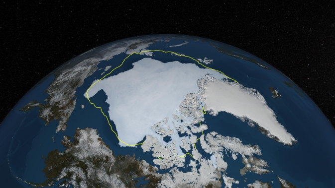
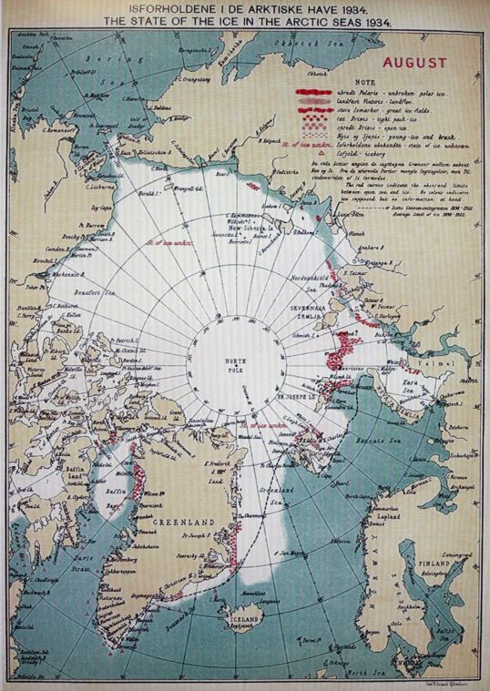
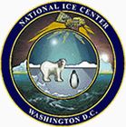
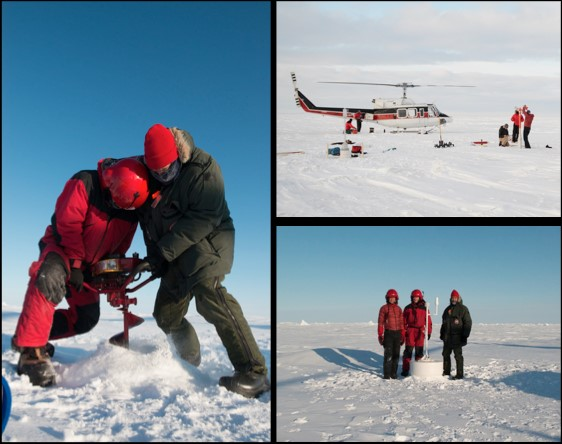

About Arctic Climate
|  | Satellite Observations of Arctic Change | The purpose of this site is to expose NASA satellite data and research on Arctic change, in the form of maps that illustrate the changes taking place in the Arctic over time.This site is presented with support from NASA Earth Sciences. Please click on the link for further information SatelliteObeservations |
 |
Arctic Data Integration | This portal integrates various types of Arctic data from sensor feeds, operational oceanographic and atmospheric models, satellite observations and GIS data sets describing the biological and physical characteristics of the Arctic region.Please click on the link for further information Arctic Data Integration Portal |
|  | Sea Ice Atlas | Changes in sea ice affect activities ranging from subsistence hunting and coastal travel to community safety and the use of ice as a platform by industry. There is a need for information about sea ice conditions at spatial-temporal resolutions higher than those from the National Weather Service. Alaska coastal communities from Dillingham to Nuiqsut, marine navigators, coastal managers, the US Army Corps of Engineers, the US Navy, and scientists—as well as those in the fishing, tourism, and offshore resource extraction industries—have expressed a need for an atlas that would provide such information.Please click on the link for further information Sea Ice Atlas |
|  | US National Ice Center.Naval ice center | The National Ice Center is a tri-agency operational center whose mission is to provide worldwide navigational ice analyses for the armed forces of the United States, allied nations, and U.S. government agencies.Please click on the link for further information US National Ice center.Naval Ice center |
|  | US International Arctic Buoy Program | The participants of the IABP work together to maintain a network of drifting buoys in the Arctic Ocean to provide meteorological and oceanographic data for real-time operational requirements and research purposes including support to the World Climate Research Programme (WCRP) and the World Weather Watch (WWW) Programme.Please click on the link for further information US International Arctic Buoy Program |